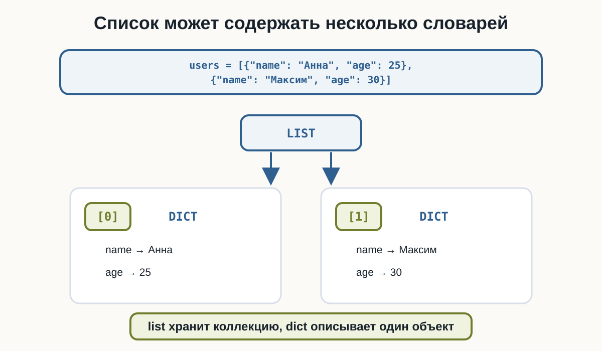
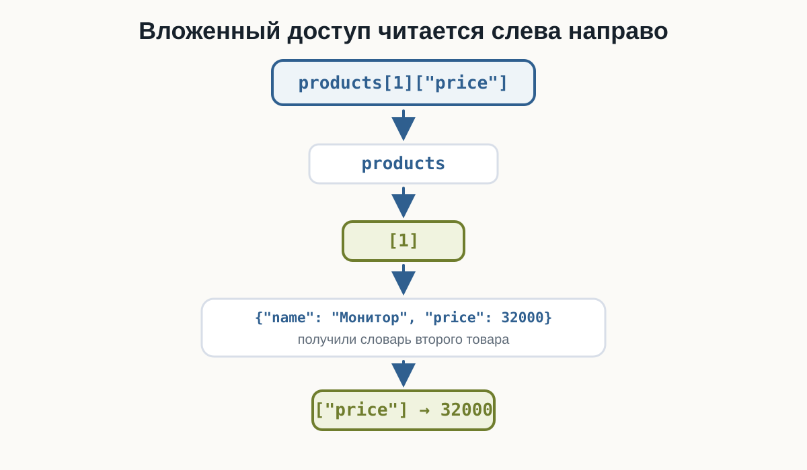
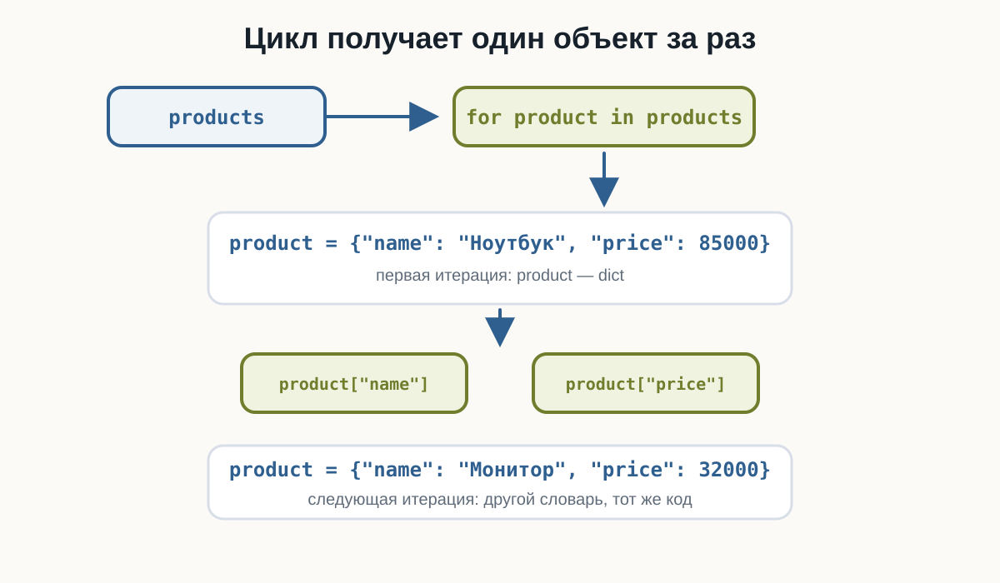
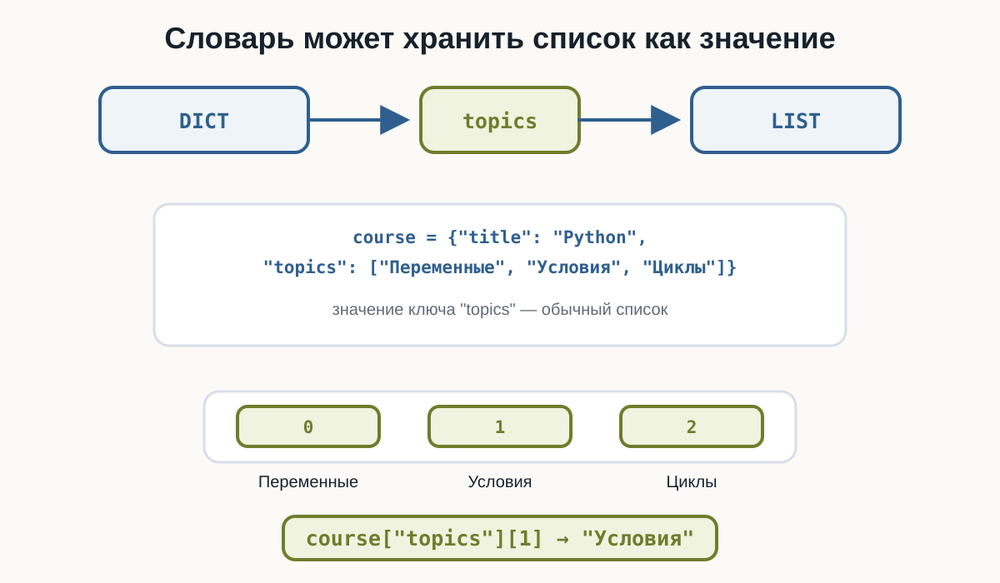
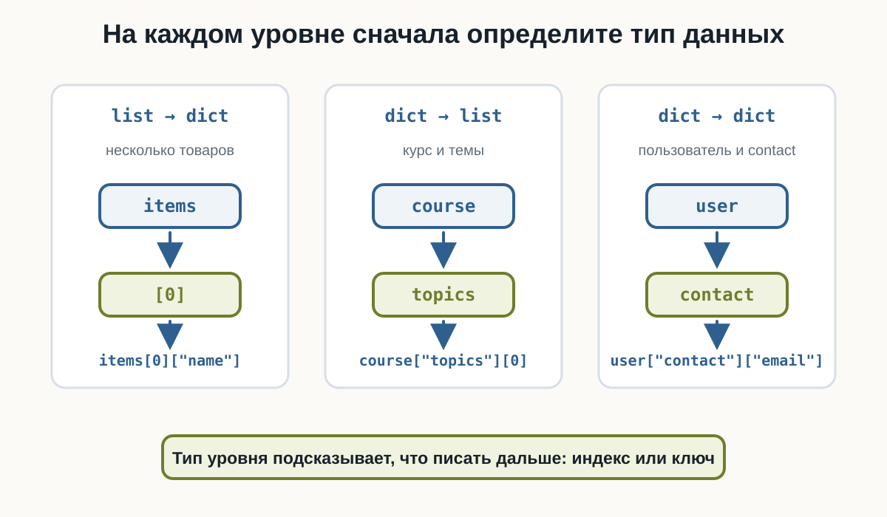

4.5 Вложенные структуры данных
вложенные структуры Python, список словарей Python, словарь со списком Python, вложенные словари Python, list of dict Python, nested data Python
Главный вопрос главы:
Как объединять списки и словари, чтобы описывать более сложные данные?
До сих пор мы работали с отдельными структурами.
Список:
languages = ["Python", "Java", "Go"]Словарь:
user = {
"name": "Анна",
"age": 25
}Но реальные данные часто состоят из нескольких объектов.
Например, нужно хранить нескольких пользователей:
Анна → 25 лет
Максим → 30 лет
Олег → 27 летОдин словарь описывает одного пользователя.
Несколько пользователей удобно хранить в списке:
users = [
{
"name": "Анна",
"age": 25
},
{
"name": "Максим",
"age": 30
},
{
"name": "Олег",
"age": 27
}
]Так появляются вложенные структуры данных.
Что такое вложенная структура
Вложенная структура — это структура данных, внутри которой находятся другие структуры.
Например:
users = [
{"name": "Анна", "age": 25},
{"name": "Максим", "age": 30}
]Здесь:
users
↓
list
↓
каждый элемент
↓
dictПолучается:
list
├── dict
└── dictСписок словарей
Одна из самых распространённых моделей:
products = [
{
"name": "Ноутбук",
"price": 85000
},
{
"name": "Монитор",
"price": 32000
},
{
"name": "Мышь",
"price": 2500
}
]Здесь:
products
→ список товаров
каждый элемент списка
→ словарь одного товараСписок хранит коллекцию объектов, а словарь описывает свойства каждого объекта.
list-of-dicts.py
products = [
{
"name": "Ноутбук",
"price": 85000
},
{
"name": "Монитор",
"price": 32000
},
{
"name": "Мышь",
"price": 2500
}
]
print(products)
print(type(products))
print(type(products[0]))
Доступ к одному объекту
Получим первый элемент списка:
products[0]Результат:
{
"name": "Ноутбук",
"price": 85000
}Теперь можно получить поле этого словаря:
products[0]["name"]Результат:
НоутбукПолная цепочка:
products
↓
[0]
↓
первый словарь
↓
["name"]
↓
"Ноутбук"Читаем выражение слева направо
Рассмотрим:
products[1]["price"]Читаем по шагам:
products
↓
элемент с индексом 1
↓
словарь товара
↓
ключ "price"
↓
32000Такой способ чтения помогает разбирать вложенные выражения без угадывания.
Если написать индекс, которого нет, например products[10], Python получит несуществующий элемент списка и выдаст IndexError.
Если элемент есть, но внутри словаря нет нужного ключа, например products[0]["missing"], будет KeyError.
Если выражение кажется сложным:
products[1]["price"]мысленно разбейте его:
product = products[1]
price = product["price"]Результат тот же, но структура становится понятнее.

Изменение вложенного значения
Элемент внутри вложенного словаря можно изменить:
products = [
{
"name": "Ноутбук",
"price": 85000
},
{
"name": "Монитор",
"price": 32000
}
]
products[1]["price"] = 30000
print(products[1])Теперь второй товар содержит:
price → 30000Мы:
нашли элемент списка
↓
получили словарь
↓
изменили значение по ключуДобавление поля во вложенный словарь
Можно добавить новое поле:
products[0]["available"] = TrueТеперь первый товар содержит:
{
"name": "Ноутбук",
"price": 85000,
"available": True
}Это обычное изменение словаря, только сам словарь находится внутри списка.
Перебор списка словарей
Чаще всего все объекты обрабатываются циклом:
products = [
{"name": "Ноутбук", "price": 85000},
{"name": "Монитор", "price": 32000},
{"name": "Мышь", "price": 2500}
]
for product in products:
print(product["name"], "→", product["price"])Результат:
Ноутбук → 85000
Монитор → 32000
Мышь → 2500На каждой итерации:
productсодержит один словарь.

Фильтрация объектов
Можно использовать условие внутри цикла:
products = [
{"name": "Ноутбук", "price": 85000},
{"name": "Монитор", "price": 32000},
{"name": "Мышь", "price": 2500}
]
for product in products:
if product["price"] >= 30000:
print(product["name"])Результат:
Ноутбук
МониторТеперь условие применяется к каждому объекту отдельно.
Безопасное получение поля
Не все словари обязательно содержат одинаковые поля.
Например:
users = [
{
"name": "Анна",
"city": "Казань"
},
{
"name": "Максим"
}
]У второго пользователя нет "city".
Поэтому:
user["city"]может вызвать KeyError.
Используем уже знакомый get():
for user in users:
city = user.get("city", "Не указан")
print(user["name"], "→", city)Результат:
Анна → Казань
Максим → Не указанДобавление нового объекта
Список остаётся обычным изменяемым списком.
Поэтому можно использовать append():
users = [
{"name": "Анна", "age": 25}
]
users.append({
"name": "Максим",
"age": 30
})
print(users)Теперь список содержит два словаря.
Создание объекта перед append()
Иногда удобнее сначала создать словарь:
new_user = {
"name": "Олег",
"age": 27
}а затем:
users.append(new_user)Это особенно полезно, когда данные собираются постепенно.
Создание объекта из input()
Например:
users = []
name = input("Имя: ")
age = int(input("Возраст: "))
user = {
"name": name,
"age": age
}
users.append(user)
print(users)Получается цепочка:
input()
↓
переменные
↓
dict
↓
append()
↓
listСловарь со списком
Вложенность может работать и наоборот.
Например:
course = {
"title": "Python",
"topics": [
"Переменные",
"Условия",
"Циклы"
]
}Здесь:
course
↓
dict
↓
ключ "topics"
↓
list
Доступ к элементу списка внутри словаря
Получим список тем:
course["topics"]Получим первую тему:
course["topics"][0]Результат:
ПеременныеЧитаем:
course
↓
ключ "topics"
↓
список
↓
индекс 0
↓
"Переменные"Изменение списка внутри словаря
Поскольку "topics" содержит обычный список:
course["topics"].append("Функции")Теперь:
print(course["topics"])получим:
['Переменные', 'Условия', 'Циклы', 'Функции']Методы списка работают как обычно.
Перебор списка внутри словаря
Например:
course = {
"title": "Python",
"topics": [
"Переменные",
"Условия",
"Циклы"
]
}
for topic in course["topics"]:
print(topic)Цикл получает элементы вложенного списка.
Несколько списков внутри словаря
Словарь может хранить несколько списков:
project = {
"name": "Website",
"developers": ["Анна", "Максим"],
"technologies": ["Python", "HTML", "CSS"]
}Получить второго разработчика:
project["developers"][1]Получить первую технологию:
project["technologies"][0]Главное — каждый раз понимать, какой тип находится на текущем уровне.
Проверяйте тип структуры на каждом уровне
Рассмотрим:
project["developers"][1]По шагам:
project
→ dict
project["developers"]
→ list
project["developers"][1]
→ strА:
users[0]["name"]разбирается иначе:
users
→ list
users[0]
→ dict
users[0]["name"]
→ strЭто один из самых полезных навыков при работе с вложенными данными.
Словарь внутри словаря
Можно вложить словарь в другой словарь:
user = {
"name": "Анна",
"contact": {
"email": "anna@example.com",
"city": "Казань"
}
}Получить email:
user["contact"]["email"]Результат:
anna@example.comВ этой главе ограничимся простыми структурами глубиной 2–3 уровня.
Изменение вложенного словаря
Например:
user["contact"]["city"] = "Москва"Получаем:
contact
└── city → МоскваЛогика та же:
получить внешний словарь
↓
получить внутренний словарь
↓
изменить полеПример: заказы
orders = [
{
"id": 101,
"customer": "Анна",
"total": 4500,
"paid": True
},
{
"id": 102,
"customer": "Максим",
"total": 7300,
"paid": False
}
]Выведем неоплаченные заказы:
for order in orders:
if not order["paid"]:
print(
"Заказ",
order["id"],
"→",
order["customer"]
)Здесь список словарей уже напоминает данные реального приложения.
Пример: сумма заказов
Можно обработать числовое поле всех объектов:
orders = [
{"id": 101, "total": 4500},
{"id": 102, "total": 7300},
{"id": 103, "total": 2100}
]
total = 0
for order in orders:
total += order["total"]
print("Общая сумма:", total)Результат:
Общая сумма: 13900Поиск объекта
Например, найдём пользователя по имени:
users = [
{"name": "Анна", "age": 25},
{"name": "Максим", "age": 30},
{"name": "Олег", "age": 27}
]
search_name = "Максим"
for user in users:
if user["name"] == search_name:
print(user)Мы пока не усложняем логику досрочным выходом из цикла.
Главная идея — поиск нужного словаря по его полю.
Добавление данных в найденный объект
Например:
users = [
{"name": "Анна", "active": True},
{"name": "Максим", "active": False}
]
for user in users:
if user["name"] == "Максим":
user["active"] = True
print(users)Изменяется конкретный словарь внутри списка.
Итоговый пример: команда
Теперь объединим несколько операций в одной модели:
team = {
"name": "Backend",
"members": [
{"name": "Анна", "experience": 3},
{"name": "Максим", "experience": 5},
{"name": "Олег", "experience": 2}
]
}Здесь внешний словарь описывает команду, а список "members" хранит словари участников.
Программа может посчитать средний опыт, выбрать участников по условию и изменить вложенное значение.
Не делайте вложенность глубже без необходимости
Технически можно добавлять новые уровни почти бесконечно, но такой код быстро становится трудно читать.
team["members"][0]["name"]Такую цепочку ещё можно спокойно разобрать: словарь, список, словарь, поле.
А если выражение становится заметно длиннее, структуру стоит внимательно пересмотреть.
На текущем этапе хороший ориентир:
Если доступ превращается в длинную цепочку из множества
[], структуру стоит внимательно пересмотреть.
Вложенные структуры полезны, но чрезмерная вложенность усложняет:
- чтение;
- изменение;
- поиск ошибок;
- обработку данных.
Пока используйте 2–3 понятных уровня.
Как выбрать структуру
Рассмотрим несколько моделей.
Несколько товаров:
[
{"name": "Ноутбук", "price": 85000},
{"name": "Монитор", "price": 32000}
]Подходит:
list
↓
dictОдин курс с несколькими темами:
{
"title": "Python",
"topics": ["Циклы", "Строки", "Списки"]
}Подходит:
dict
↓
listПользователь с контактными данными:
{
"name": "Анна",
"contact": {
"email": "anna@example.com"
}
}Подходит:
dict
↓
dictСтруктуру выбирают исходя из смысла данных.

Что важно запомнить
Список словарей:
users = [
{"name": "Анна"},
{"name": "Максим"}
]Доступ:
users[0]["name"]Перебор:
for user in users:
print(user["name"])Словарь со списком:
course = {
"topics": ["Условия", "Циклы"]
}Доступ:
course["topics"][0]Словарь внутри словаря:
user = {
"contact": {
"email": "anna@example.com"
}
}Доступ:
user["contact"]["email"]Для необязательных полей словаря полезен:
get()Главное правило:
На каждом уровне понимайте, с каким типом данных вы сейчас работаете.
Практические задания
Задание 1. Фильмотека
Дан список:
movies = [
{"title": "Interstellar", "year": 2014},
{"title": "Dune", "year": 2021},
{"title": "Arrival", "year": 2016}
]Выведите названия всех фильмов.
movies = [
{"title": "Interstellar", "year": 2014},
{"title": "Dune", "year": 2021},
{"title": "Arrival", "year": 2016}
]
for movie in movies:
print(movie["title"])Задание 2. Изменение статуса сервера
Даны серверы:
servers = [
{"name": "api-1", "online": True},
{"name": "api-2", "online": False},
{"name": "api-3", "online": True}
]Измените статус api-2 на True.
servers = [
{"name": "api-1", "online": True},
{"name": "api-2", "online": False},
{"name": "api-3", "online": True}
]
for server in servers:
if server["name"] == "api-2":
server["online"] = True
print(servers)Задание 3. Студент и предметы
Дан словарь:
student = {
"name": "Мария",
"subjects": ["Python", "SQL", "Git"]
}Выведите каждый предмет на отдельной строке.
student = {
"name": "Мария",
"subjects": ["Python", "SQL", "Git"]
}
for subject in student["subjects"]:
print(subject)Задание 4. Новый навык
Дан профиль:
developer = {
"name": "Alex",
"skills": ["Python", "Git"]
}Добавьте навык "Docker".
developer = {
"name": "Alex",
"skills": ["Python", "Git"]
}
developer["skills"].append("Docker")
print(developer)Задание 5. Контактные данные
Дан:
employee = {
"name": "Анна",
"contact": {
"email": "anna@example.com",
"phone": "+123456789"
}
}Выведите email сотрудника.
employee = {
"name": "Анна",
"contact": {
"email": "anna@example.com",
"phone": "+123456789"
}
}
print(employee["contact"]["email"])Задание 6. Средняя температура
Даны измерения:
measurements = [
{"city": "Москва", "temperature": 18},
{"city": "Казань", "temperature": 22},
{"city": "Самара", "temperature": 20},
{"city": "Омск", "temperature": 16}
]Вычислите среднюю температуру.
measurements = [
{"city": "Москва", "temperature": 18},
{"city": "Казань", "temperature": 22},
{"city": "Самара", "temperature": 20},
{"city": "Омск", "temperature": 16}
]
total = 0
for measurement in measurements:
total += measurement["temperature"]
average = total / len(measurements)
print("Средняя температура:", average)Задание 7. Только доступные билеты
Даны:
tickets = [
{"event": "Python Meetup", "available": True},
{"event": "Data Conference", "available": False},
{"event": "Open Source Day", "available": True}
]Выведите только мероприятия, на которые ещё есть билеты.
tickets = [
{"event": "Python Meetup", "available": True},
{"event": "Data Conference", "available": False},
{"event": "Open Source Day", "available": True}
]
for ticket in tickets:
if ticket["available"]:
print(ticket["event"])Задание 8. Необязательное поле
Даны пользователи:
users = [
{"name": "Анна", "country": "Россия"},
{"name": "John"},
{"name": "Maria", "country": "Испания"}
]Выведите:
Анна → Россия
John → Не указана
Maria → ИспанияИспользуйте get().
users = [
{"name": "Анна", "country": "Россия"},
{"name": "John"},
{"name": "Maria", "country": "Испания"}
]
for user in users:
country = user.get("country", "Не указана")
print(user["name"], "→", country)Задание 9. Добавление заказа
Есть список:
orders = [
{"id": 101, "total": 1500},
{"id": 102, "total": 2700}
]Создайте новый заказ:
id → 103
total → 4200и добавьте его в список.
orders = [
{"id": 101, "total": 1500},
{"id": 102, "total": 2700}
]
new_order = {
"id": 103,
"total": 4200
}
orders.append(new_order)
print(orders)Задание 10. Анализ команды
Дана команда:
team = {
"name": "Backend",
"members": [
{"name": "Анна", "experience": 3},
{"name": "Максим", "experience": 5},
{"name": "Олег", "experience": 2}
]
}Нужно:
- вывести название команды;
- вывести всех участников;
- найти суммарный опыт;
- вычислить средний опыт;
- вывести участников с опытом не меньше
3лет; - увеличить опыт Олега на
1.
team = {
"name": "Backend",
"members": [
{"name": "Анна", "experience": 3},
{"name": "Максим", "experience": 5},
{"name": "Олег", "experience": 2}
]
}
print("Команда:", team["name"])
total_experience = 0
for member in team["members"]:
print(member["name"])
total_experience += member["experience"]
average = total_experience / len(team["members"])
print("Общий опыт:", total_experience)
print("Средний опыт:", average)
print("Опыт от 3 лет:")
for member in team["members"]:
if member["experience"] >= 3:
print(member["name"])
for member in team["members"]:
if member["name"] == "Олег":
member["experience"] += 1
print(team)Что дальше?
Теперь мы умеем хранить данные в более реалистичном виде:
list
↓
dictили:
dict
↓
listМы можем:
получать вложенные значения
↓
перебирать объекты
↓
изменять поля
↓
фильтровать данные
↓
добавлять новые объектыНо при обработке данных часто возникает повторяющийся шаблон.
Например:
squares = []
for number in numbers:
squares.append(number ** 2)Такой код встречается очень часто.
Python позволяет записывать некоторые подобные преобразования короче.
Следующая глава — «List comprehensions».
Вложенные структуры данных Python: краткое резюме
Вложенные структуры данных в Python позволяют объединять list и dict для описания более сложных объектов. Распространённый вариант — список словарей, где каждый словарь представляет отдельный объект: пользователя, товар, заказ или задачу.
Доступ к вложенным данным выполняется последовательно: например, users[0]["name"] сначала получает элемент списка, а затем значение словаря. Аналогично course["topics"][0] сначала получает список по ключу, а затем его элемент.
При работе с вложенными структурами важно понимать тип данных на каждом уровне и избегать лишней глубины. Следующая глава посвящена теме «List comprehensions».